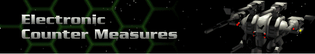

› |
› |
Electronic Counter Measures |

All ECM Devices are gradually available to all Hercs. The effects of multiple ECM systems are cumulative.
Single Band ECM – reduces opponent’s chance to hit by 5% of their base to-hit chance.
Zerosignal Dampener – reduces an opponent’s chance to hit by 10% of their base to-hit chance.
Variable Pulse Ghoster – reduces an opponent’s chance to hit by 15% of their base to-hit chance.
Electronic Image Displacer – reduces an opponent’s chance to hit by 20% of their base to-hit chance.
Active Offsource Jamming – reduces an opponent’s chance to hit by 25% of their base to-hit chance.